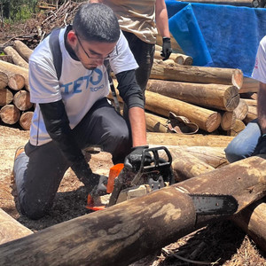

PRODUTO OPERACIONAL
Problem Solver Bot
250+ usuários
13 fluxos
em evolução contínua

Lucas Echer GitHubAUTOMAÇÃO, DADOS E MELHORIA CONTÍNUA
Sou Lucas Echer. Uno visão de processo, experiência de campo e tecnologia para reduzir tarefas repetitivas, organizar decisões e criar ferramentas que crescem junto com a operação.
Da operação à solução: pesquisa, construção, teste e evolução contínua.
PRODUTO OPERACIONAL
em evolução contínua
ESCALA E GOVERNANÇA
120+ logins pessoais
57 logins sistêmicos
INTELIGÊNCIA OPERACIONAL
Dashboards, bases, métricas e automações.
QUEM EU SOU
Tenho 21 anos e construí minha trajetória aprendendo a investigar problemas reais, conversar com quem vive o processo e transformar esse conhecimento em soluções simples de usar.
Minha formação técnica é principalmente autodidata. Aprendo pesquisando, criando protótipos, testando no contexto real e refinando cada decisão com base no retorno das pessoas.
Também atuei na coordenação voluntária de GAP, acompanhando dados, feedbacks e a experiência dos voluntários — uma vivência que reforçou meu olhar para organização, comunicação e cuidado com as pessoas.
EXPERIÊNCIA
Cada etapa adicionou uma camada diferente: leitura de contexto, relacionamento com clientes, governança, análise de dados e construção de ferramentas.
Shopee
Criação do Problem Solver Bot, um sistema único integrado ao fluxo operacional para reunir análises, tratativas, auditorias, gestão e automações em uma experiência centralizada.
Process & Quality
Automatização de relatórios, criação de dashboards, bases de dados e métricas. Gestão de 120+ logins pessoais e 57 sistêmicos em 100+ sistemas, além de suporte à rotina de TI, VPNs, notebooks e estabilização de sistemas com clientes.
Consultoria jurídica
Experiência com rotinas jurídicas, análise de contexto e comunicação clara — repertório que hoje aplico ao traduzir regras complexas em fluxos compreensíveis e seguros.
JusBrasil
Dois anos de experiência em um ambiente que conecta tecnologia e informação jurídica, fortalecendo meu interesse por sistemas, organização de conhecimento e soluções digitais.
AMBIENTES E OPERAÇÕES
De PW e outros sistemas legados em ASCII a WMS, Oracle, Atlas, Zeus, WFM e plataformas jurídicas.
PROJETOS
Projetos que combinam investigação do problema, desenho de fluxo, construção técnica, governança e melhoria contínua.
WMS · AUTOMAÇÃO · PRODUTO OPERACIONAL
Um assistente integrado ao WMS que reduz a distância entre identificar um problema, entender sua causa e tomar uma ação segura.
O produto reúne jornadas de análise, Boxing, Tratativa, IBT, Devices, gestão, alocação e auditoria em uma interface única. Sua arquitetura separa carregamento, experiência no WMS, motor operacional e backend para permitir atualização e controle em escala.
ANÁLISE OPERACIONAL · SIMULAÇÃO PÚBLICA
Comparando o físico encontrado com o saldo esperado.
IMPACTO PÚBLICO
Indicadores acumulados informados para a apresentação pública do projeto.
PAINEL DEMONSTRATIVO
Uma versão pública e simplificada de um painel de Boxing: escolha uma pessoa e acompanhe sua produtividade por hora ao redor da esteira.
Simulação local, sem marcas, dados reais ou conexão com sistemas corporativos. Recarregue a página para restaurar os valores iniciais.
DADOS · DASHBOARD
Uma demonstração pública de como transformar registros operacionais em leitura de volume, turno, processo e tendência sem expor dados reais da operação.
Abrir demonstraçãoPROCESSOS · QUALIDADE
Scripts para relatórios, dashboards e estruturas de dados que diminuem etapas manuais e tornam o acompanhamento da operação mais confiável.
COMO EU TRABALHO
Entendo o fluxo real, suas exceções e quem sente o problema.
Transformo sinais dispersos em regra, prioridade e caminho de decisão.
Crio a menor solução útil, com cuidado para adoção, segurança e manutenção.
Uso dados e feedbacks para corrigir, simplificar e ampliar o impacto.
VAMOS CONVERSAR
Conheça meus projetos e acompanhe as próximas evoluções.
Visitar meu GitHub